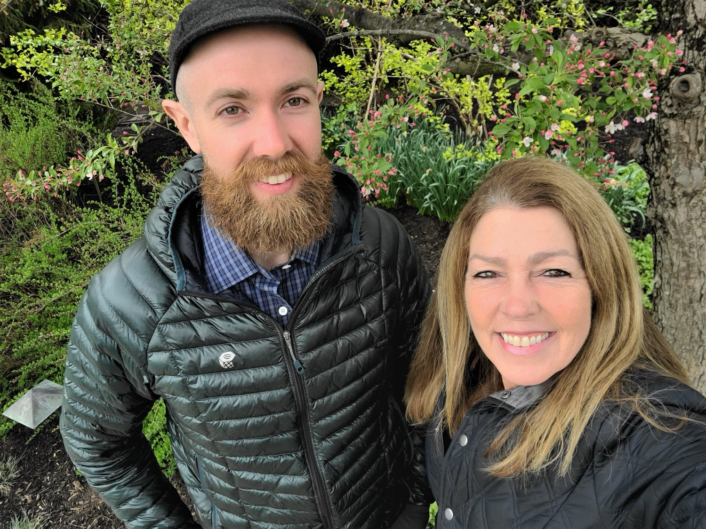

Kissinger Bigatel & BrowerRealtors® · Est. 1933
A Real Estate Agent in State College, PA Who Knows Every Road in Centre County
Barb Alpert, REALTOR®, Associate Broker & Cliff Rupert, REALTOR® — a mother-son team with Kissinger Bigatel & Brower
Thirty-plus years, one county, and a genuine love for the place. From first homes near Penn State to horse farms in Penns Valley, we help Happy Valley buyers and sellers make confident decisions.

Happy Valley Real Estate, Handled by People Who Live Here
Centre County isn’t one market — it’s a dozen small ones. A townhome in Toftrees, a Victorian in Bellefonte and a 22-acre farm outside Centre Hall each sell on completely different logic. Knowing which is which is the whole job, and it’s why so much of our business comes from past clients and their neighbors.
Buying a Home
Homes for sale in State College, PA and across Centre County — plus honest guidance on neighborhoods, schools and what a house is actually worth.
For buyers →
Selling a Home
Pricing, preparation and negotiation from an Associate Broker who has closed through several market cycles in this county.
For sellers →
Farms & Equestrian
Horse farms for sale in Centre County, PA, farmettes and acreage — evaluated by someone who owns, rides and maintains a farm herself.
Our specialty →
Search Homes & Farms for Sale in Centre County
Browse active listings across State College, Boalsburg, Bellefonte and the surrounding townships, then send us anything you want to see in person.
Placeholder — IDX / listing search. Drop the KBB-approved IDX search embed in here, or point the buttons below at Barb’s search page on 1kbb.com.

Why Work With Barb Alpert?
It’s about people, families and their hopes and dreams. It’s a relationship based on trust, knowledge and education. — Barb Alpert, REALTOR®, Associate Broker
- A Centre County native. Barb grew up here, raised two children here with her husband Gary, and still lives here on a small farm.
- An Associate Broker. Broker-level licensing and 30+ years of closed files behind her — the person you want on a complicated transaction.
- A real equestrian. USDF Bronze Medalist, shown through Prix St. Georges, trains in Wellington, FL each winter. Farm buyers get an agent who knows what good footing and honest fencing look like.
- Two people, not a call center. Barb’s experience paired with Cliff’s responsiveness.
The Team
A Mother-Son Real Estate Team in State College
Because this market moves fast, Barb teamed up with her son, Cliff Rupert, REALTOR®. Cliff graduated from State College Area High School and Penn State, worked as an outdoor educator across the American Southwest, and is tied into the community through cycling and environmental work — he holds several water and wastewater management licenses and helps protect a well-regarded local trout fishery.
What you get is 30+ years of transaction experience paired with someone who answers the phone, walks the property twice, and tracks every detail through to closing.
Communities We Serve Across Centre County
Every town in Happy Valley has its own character, price band and commute. Start here:
State College
College Heights, Holmes-Foster, Highlands, Toftrees, Park Forest, Gray’s Woods and the rest of the State College Area School District footprint.
Boalsburg
Historic village charm minutes from Tussey Mountain and the Mount Nittany ridgeline.
Bellefonte
Victorian architecture, the county seat, and some of the best value in the county.
Pine Grove Mills
Small-village living tucked against Tussey Ridge, about ten minutes from campus.
Centre Hall & Penns Valley
Farms, acreage and country living on the far side of the mountain.
All Communities
Plus Port Matilda, Pleasant Gap, Lemont, Philipsburg, Howard, Spring Mills and Millheim.
What Clients Say
Barb was very easy to work with. She knows the market very well and gave me good advice. I was out of state, and she helped to make the necessary repairs by finding people to do the work and meeting them at my place when necessary. My property sold quickly for a reasonable price. Barb is a pleasant, straight forward, good communicator, and I highly recommend her as a seller’s agent.
Out-of-state seller · Client review via 1kbb.com
My husband and I worked with Barb when we purchased our first home a few years ago in State College. She was extremely professional, personable, and patient with us — which was good because my husband and I started our house hunting process with really different preferences for our home.
First-time buyers, State College · Client review via 1kbb.com
Frequently Asked Questions About Working With a REALTOR® in State College
How do I find a good real estate agent in State College, PA?
Look for someone who lives in the market they sell, has worked through more than one market cycle, and genuinely knows your property type. Barb is a Centre County native with 30+ years in the business and an Associate Broker license with Kissinger Bigatel & Brower, the brokerage founded in State College in 1933.
What areas of Centre County do you serve?
State College, Boalsburg, Bellefonte, Pine Grove Mills, Centre Hall and Penns Valley, plus Port Matilda, Pleasant Gap, Lemont, Philipsburg and the surrounding rural townships. See all communities.
Do you specialize in horse farms and equestrian properties?
Yes — it’s our signature niche. Barb has been a horsewoman for 40+ years, has shown dressage through Prix St. Georges, earned her USDF Bronze Medal, and runs her own small farm. See our farms & equestrian page.
Does it cost anything to talk before I’m ready to buy or sell?
No. A conversation about your timeline, your neighborhood options, or what your home might be worth is free and carries no obligation. Call or text Barb at 814-360-5742.
Who is Cliff Rupert?
Cliff is a REALTOR® and Barb’s son. He grew up in State College, earned a B.S. in Recreation, Parks and Tourism Management from Penn State, and partners with Barb so clients get deep experience and fast, attentive service. Read Cliff’s bio.
Let’s Talk About Your Move
Whether you’re buying your first place near campus, selling the family home, or looking for a farm with room for horses — start with a conversation. No pressure, no obligation.